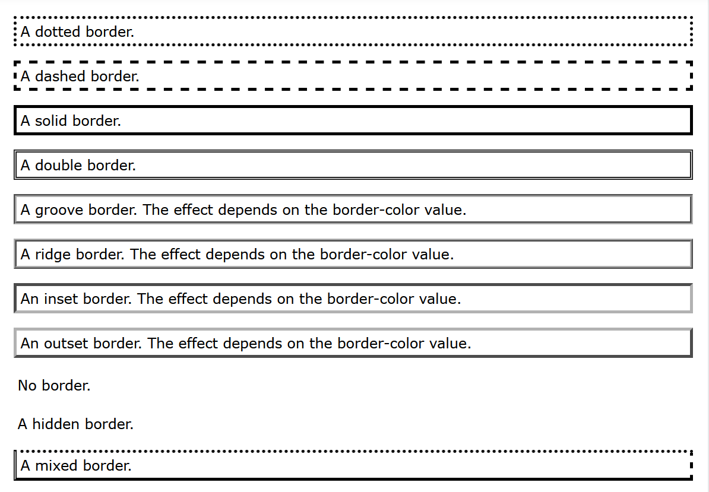

Полезные сайты
О шапке сайта
Можно вставлять иконки в теге link с расширением .ico. Можно периименовывать .jpg to .ico
<meta name="viewport" content="width=device-width, initial-scale=1.0"> - это позволяет различным усторойствам
подгонять ширину страницы
Перечень известных тегов
- head - шапка сайта
- h1...6 - заголовок. Всегда жирный текст
- "em" или "i" - курсив. "em" характеризует смысловое ударение. Когда "i" просто текст курсивом
- head - заголовок
- ul/li - ненумерованный список
- "ul" type="square" - квадратные точки
- Замена маркеров списка на символы в CSS:
li{
color:green;
list-style-type: none;
}
li::before{
content:"-= ";
}
li::after{
content:" =-";
}
- ol/li - нумерованный список
- "ol" style="A" - "A,B,C"
- "ol" style="a" - "a,b,c"
- "ol" style="I" - "I,II,III"
- "ol" style="i" - "i,ii,iii"
- dl/dt+dd - список определений
- Колбаса Московская
-
Самая вкусная колбаса, которую можно купить везде! Но дорого :()
- br - перенос каретки. Тег не закрывается
А эти символы надо экранировать везде
- & пишется вот так & ;
- < пишется вот так <
- > пишется вот так >
- " пишется вот так "
- ' пишется вот так '
Работа с таблицами
- Таблица состоит из следующих элементов:
- table - таблица
- th - заголовок колонок таблицы
- tr - ряд таблицы
- td - данные таблицы
- border-collapse: collapse; - свойство CSS, которое можно назначить таблице чтобы все линии стали
одинарными
- border: 5px solid #ffabe1; - описание свойств таблицы и ее компонентов
Работа с изображениями
- img src="IMG/cat2.avif" alt="Cat2" width="300" - ширину указывать не обязательно. Если файлы лежат каталогом
выше, то ссылаться надо используя значек (../) родительского каталога src="../IMG/cat2.avif"
Ссылки
- <a href="Catwebsite.html">Ссылка на котиков</a> - ссылка на страницу открывающуюся в текущей вкладке
- <a href="mailto:joe@example.com?subject=feedback" target="_blank">Написать соседу</a> - ссылка на
почту открывающаяся в новой вкладке
Этот раздел посвящен CSS
Селекторы тегов
- селектор класса - class="test"
- селектор ID - d="test"
Внутри HTML стили можно писать в атрибутах вот так:
-
- style="padding-left:48px;"
- style="width: 100%; display:flex;"
- Идентификаторы можно перечислять через запятую. "h1, h2, p"
- Высота шрифта (font-size: ###;) определяется 4-мя способами
- По ключевым словам
- medium: базовый размер шрифта браузера (16 пикселей)
- small: 13 пикселей
- x-small: 10 пикселей
- xx-small: 9 пикселей
- large: 18 пикселей
- x-large: 24 пикселя
- xx-large: 32 пикселя
- В процентах от базового шрифта
- В пикселах
- В единицах "em". Где 1em = 100%
Borders
- border-style: solid;
- 
FLEXBOX
- Все предметы располагаются вдоль главной оси. "Flex-direction" вращает главную ось. По умолчанию она
направлена слева направо
Настройки редактора Atom
- settings-editor-invisibles-show indent guide - Вертикальные линии
- Packages-wrap-setting-enable/disable - включить/выключить вертикальную линию в 80 символов
- полезные модули
- pigments
- minimap
- minimap-lens
- minimap-pigments